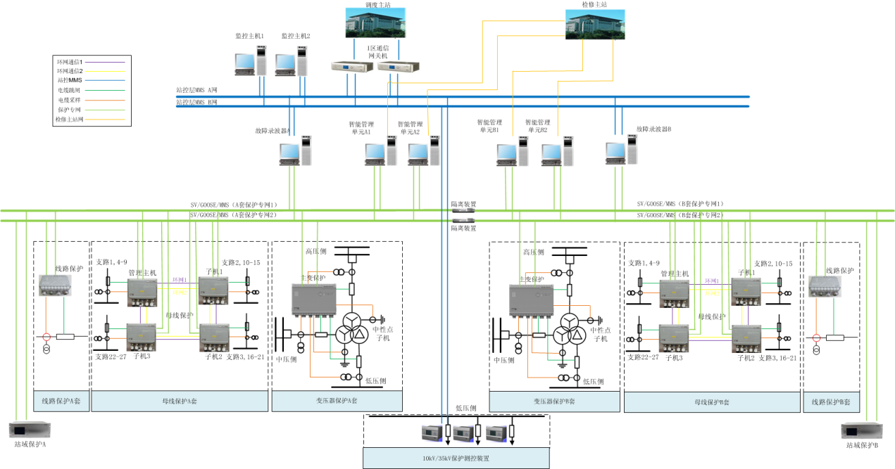
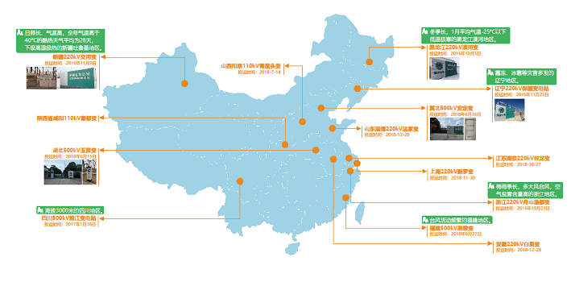
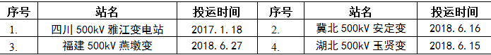
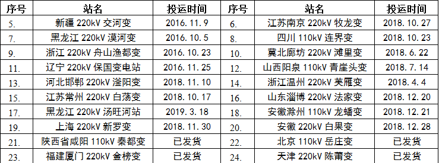

四方公司研制出的CSD系列就地化保护装置适用于110kV~750kV电压等级，具有完全自主知识产权。其在自主研制的AESP（高级嵌入式软件）平台上实现了软件开发的柔性制造以及逻辑可编程功能，提升了保护装置的可靠性和灵活性。
CSD系列就地化保护装置防护等级达到IP67，支持直接贴近一次设备就地布置安装。实现了保护装置间隔功能集约化设计和保护装置的即插即用，采用电缆直接采样直接跳闸，减少了中间传输环节，整体提升了保护系统的速动性。
北京四方公司是一次性通过国网110kV系列就地化保护装置首轮测试的唯一厂商。CSD系列就地化保护装置具有很好的社会经济效益和推广应用前景，整体技术达到国际领先水平。
以“采样数字化、保护就地化、元件保护专网化、信息共享化”为特征的就地化保护新技术为解决上述问题提供了有利途径和技术支撑。低功耗芯片集成技术、光纤通信技术的发展，以及装置电磁兼容、高防护、热设计等关键技术的突破，为就地化保护方案的实施提供了技术基础。

图1 就地化保护整站方案典型配置图
就地化保护通过贴近一次设备就地布置，采用电缆直接跳闸，减少电缆长度及中间环节，提升继电保护的速动性和可靠性；基于接口标准化设计，采用标准航空插头，实现保护装置的工厂化调试、模块化安装和更换式检修，减少二次设备安装、调试和检修时间，提升工作质量和效率，减少停电时间；配置一键式下装，实现装置的少维护、易维护，降低对现场工作人员的技能要求、减少现场工作量；通过一体化设计，实现继电保护装置小型化、集成化，减少设备类型及数量，降低整体设备缺陷率；保护间信息交互标准化，不依赖SCD文件，减少了保护拒动的风险。同时，保护装置就地安装能够促进一、二次设备融合。因此，应开展以就地化为特征的继电保护技术顶层设计、关键软硬件技术和检修运行技术研究，构建适应新一代智能变电站继电保护体系，研制高可靠性、高防护的就地化保护系列装置，适应电网新特性对继电保护提出的要求，推动智能变电站技术进步，引领世界继电保护技术发展方向。
1. 方案特征
1）采样数字化：保护装置直接接收电子式互感器输出数字信号，不依赖外部对时信号实现保护功能。
2）保护就地化：保护装置采用小型化、高防护、低功耗设计，实现就地化安装，缩短信号传输距离，保障主保护的独立性和速动性。
3）元件保护专网化：元件保护分散采集各间隔数据，装置间通过光纤直连，形成高可靠无缝冗余的内部专用网络。
4）信息共享化：智能管理单元集中管理全站保护设备，作为保护与变电站监控的接口，采用标准通信协议，实现保护与变电站监控之间的信息共享。
2.保护信息交互方式
为了提高继电保护的速动性和可靠性，保护装置采用直接接收互感器输出的数字信号和直接跳闸的方式。元件保护分散采集各间隔数据，装置间通过高可靠无缝冗余的内部专用网络交互信息。全站保护通过智能管理单元实现与变电站监控之间的信息交换。
3.关键技术
1）高集成度一体化板卡。应用最新的芯片技术，实现板卡的一体化、集成化设计，实现完整的继电保护功能，压缩装置尺寸；采用先进工艺，提升保护装置抗干扰能力。
2）高可靠防护装置。设计高可靠性、高防护、低功耗的保护硬件防护装置；实现一体化设计，模块化安装、调试。
3）标准化连接器。装置接口标准化，实现不同厂家保护装置的通用互换，满足防水、防尘等严苛要求。
4）元件保护高可靠专用网络。采用高可靠无缝冗余的元件保护内部专用网络，确保主变和母线保护装置内部通信的可靠性。
5）保护间交互信息标准化，保护功能不受变电站SCD文件变动影响。
目前已在国内4个500kV变电站和20个220kV及以下变电站内运行，正确动作率100%。

图2 北京四方公司就地化保护国内主要运行业绩图
500kV变电站 
220kV及以下变电站 